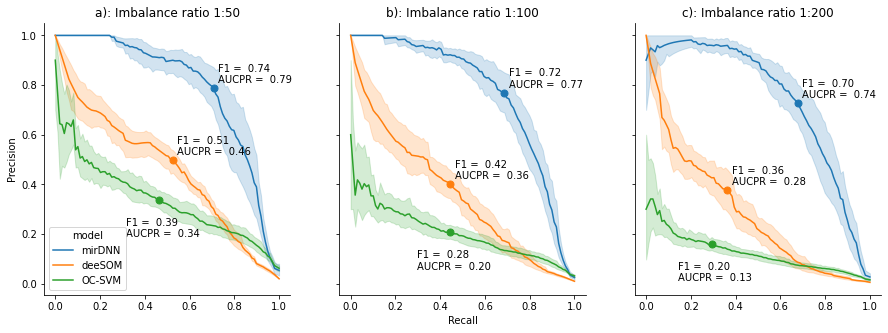

This notebook reproduces the numerical comparison of three different machine learning models trained to predict virus miRNAs.
The approach was developed based on ML for finding pre-miRNAs within the novel coronavirus genome. In the first step, the complete genome of the SARS-CoV-2 is cut into small sequences of a fixed length. This genome pre-processing step is crucial because it has a strong influence on the subsequent steps and the final results. For example, with respect to the cutting window length, if it is set arbitrarily, relevant sequences can be lost. If a too-short window length is used, a sequence with hairpin structure could be cut in half, leading to loss of structural features. If a too-long window length is used, many hairpins can be captured inside the same sequence, thus structural features become more complex and much more difficult to recognize by the classifier. Thus, to prevent these adverse influences and to ensure that no important sequences are lost nor inappropriately trimmed, the genome is cut into overlapped segments longer than the mean length of the pre-miRNAs of interest for the species under processing (in this case, viruses). The length of the cutting window has to be configured to define the maximum size that the stem-loops will have (this way shorter stems can also be identified). A stem-loop is a sequence that, once predicted its secondary structure, fulfills certain conditions such as minimum energy released when folding, unpaired nucleotides at the middle (the loop) and a minimum length in the remaining paired nucleotides (the stem). The window must be long enough to correctly include a complete hairpin, as well as to take into account the neighborhood of any possible hairpin when estimating the secondary structure. This is very important since the results of estimating a secondary structure can be greatly affected by the neighborhood of the sequences.
The second step consists in the prediction of the secondary structure resulting from the folding of the sequences obtained in the previous windowing and cutting step. This is classically done with the RNAfold tool (Hofacker, 2003), an algorithm that uses dynamic programming for finding the secondary structure which minimizes the energy released. Then, simple representations are used to extract the main features of pre-miRNAs, which are based on the inherent characteristics of the sequences and the secondary structure of these types of molecules. Some typical features are, for example, the nucleotides and dinucleotides proportion, the matching triplets, the GC content, the length of the sequence, the MFE, the frequency of occurrence of certain pairs of nucleotides, among many others. A large number of studies indicate that local sequence features as well as secondary structure are very important for pre-miRNAs identification (Allmer and Yousef, 2012, Li et al., 2009, Liu et al., 2012). The candidate sequences, their secondary structures and the set of extracted features are then used as inputs to a ML classifier, specifically designed for pre-miRNA prediction. These classifiers provide scores according to the likelihood of each RNA sequence of being a pre-miRNA. For this study, three ML methods were selected: a classical model as baseline and two top-performing and very recently published proposals based on deep learning. These methods have already been validated individually with benchmark data from well-known pre-miRNAs in humans (Bugnon et al., 2021, Yones et al., 2021). Finally, the best model was used for the pre-miRNA predictions in SARS-CoV-2.
The ML methods must be trained for identifying RNA sequences highly likely to be miRNA precursors (Stegmayer et al., 2019). Among all possible supervised classifiers, support vector machines (SVM) have been the first and most widely applied algorithm for pre-miRNAs prediction (Xue et al., 2005). A classical supervised approach needs both positive (real well-known pre-miRNA) and negative sequences. In this study, a more recent approach was used, which employs only the positive labeled data for building a classification frontier: the one-class SVM (OC-SVM). It has been shown that this approach outperforms standard two-classes SVM in pre-miRNA prediction because it is capable of learning a decision frontier only from the well-known pre-miRNAs, avoiding the large class imbalance issue (Yousef et al., 2010). Thus, the OC-SVM was trained with features from known viral pre-miRNAs only from miRBase. Then, the fitted model was used on the sequences extracted from the SARS-CoV-2 full-genome.
The second method was the deeSOM model (Bugnon et al., 2020), which consists of several hierarchical layers with self-organizing maps (SOMs). This model has already proven to be very suited to the pre-miRNA prediction task (Bugnon et al., 2021). This model has an ensemble of unsupervised SOMs that are used in parallel at the first level. The unlabeled samples are provided as input data by splitting them among the members of the ensemble, which also receive the full set of positive class cases. This allows to reduce the imbalance at each SOM in the ensemble, each one learning a different unlabeled subspace. At each SOM layer, pre-miRNA neurons are identified as those having, at least, one positive class sample. Only the sequences that are in pre-miRNA neurons pass to the next level. At each level, the map size of each SOM layer is automatically determined by an adaptive algorithm, depending on the number of sequences that arrive from the previous layer. This changes the distribution of samples on each layer, allowing a further depuration of pre-miRNA candidates. Therefore, several deep layers are added with this self-size-adjusting method, until only known pre-miRNA samples remain at the last map. The best candidate sequences are identified as the ones in the pre-miRNA neurons of the last levels. Thus, this model was trained with the features of known pre-miRNAs sequences from other viruses (positive-class samples), 1 million of negative sequences from the human genome, and the features of all the sequences extracted from the full-genome of the novel coronavirus (marked as unlabeled). The largest possible number of structural features available in literature (Yones et al., 2015) were extracted.
Finally, the third method was mirDNN (Yones et al., 2021), a convolutional neural network based on a residual network. This model is trained directly with raw RNA sequences, their corresponding predicted secondary structure and MFE. Thus, the input is represented as a one-hot-encoding tensor of shape , being the maximum sequence length. Each row of the tensor represents the four possible ribonucleotides A, U, G, C and each column represents a position in the sequence. The tensor size is fixed and completed with zero-padding for sequences shorter than . The secondary structure is represented as a tensor of shape , where the value of each element indicates the type of match with the opposite nucleotide. These two tensors are concatenated over the first dimension to form a tensor of shape , which is the input of the model. The first layer of this network is a one-dimensional convolution, followed by stacked identity blocks (He et al., 2016) and pooling layers. The identity blocks allow the model to auto-define the number of convolutional layers needed during training, avoiding optimization of this critical hyperparameter. Each block is composed of two activation functions, two batch normalization layers, and two convolutions. The result is summed up to the input of the next identity block, which helps back-propagate the training error, allowing the addition of convolution layers without bothering the training of the model. After the identity blocks, a pooling layer is used to reduce the length of the sequence by 2. After several of these stages, another tensor is obtained, which is converted into a one-dimensional vector that then passes through activation and batch normalization layers. Then, the input sequence stability, calculated as -MFE/length of the sequence, is appended in order to form a new tensor that feeds a fully connected layer that generates the corresponding output score. For training this model, the focal loss (FL) function (Lin et al., 2020) has been used in order to tackle the high class-imbalance. Usually, when the negative examples (the majority class) are forwarded in the network, they generate an error to be back-propagated through the model whose sum is much larger than the contribution of the (few) positive examples. Thus, the model is heavily biased towards the negative class, meanwhile the positive class is not properly learned. In order to overcome this problem, the FL function can be used to reduce the weight given to the examples easily classified, and increase the weight of the most difficult samples. Therefore, in an imbalanced escenario, the model errors for both the minority (in this case, the positive) class and the unlabeled near the positive class increase in importance to a higher extent than the most obvious negative samples, driving the learning of the network. The mirDNN was trained using the known viral pre-miRNAs as positive class and 1 million of negative sequences from the human genome. After training, the complete genome of the SARS-CoV-2 virus was used for prediction.
Run this cell to download the dataset and install all required libraries.
import os
import numpy as np
import pandas as pd
from sklearn.svm import OneClassSVM
from deesom import DeeSOM
import pickle
from scipy.stats import zscore
from Bio import Seq, SeqIOmirBase virus miRNAs are used as positive class, along with non-mirna hairpin-like sequences from the human genome. Data is split to perform a 10-fold cross-validation with each method.
# all the known virus miRNAs are used as positive examples
features_virus_mirnas = pd.read_csv('dataset/features_virus_miRNAs.csv')
# The negative set is composed of a random set of hsa hairpin-like sequences
features_unlabeled_hairpins = pd.read_csv('dataset/features_unlabeled_hairpins.csv') # Hairpins from hsa genome
labels = np.concatenate((np.ones(len(features_virus_mirnas)), np.zeros(len(features_unlabeled_hairpins))))
features = np.concatenate((features_virus_mirnas.drop(columns=["sequence_names"]),
features_unlabeled_hairpins.drop(columns=["sequence_names"]))).astype(np.float)
sequence_names = np.concatenate((features_virus_mirnas.sequence_names, features_unlabeled_hairpins.sequence_names))
# Feature normalization
features[np.where(np.isnan(features))] = 0
features = zscore(features, axis=0)
features[np.where(np.isnan(features))] = 0
test_ind = pickle.load(open("test_partitions.pk", "rb"))
nfolds = 10scores = {}for imb in ["1:50", "1:100", "1:200"]:
m_name = "OC-SVM " + imb
scores[m_name] = []
for fold in range(nfolds):
print("%s fold %d/%d" % (m_name, fold + 1, nfolds))
train_ind = np.array(list(set(np.arange(len(labels))) - set(test_ind[imb][fold])))
# Train
model= OneClassSVM(kernel="linear")
model.fit(features[train_ind, :][labels[train_ind] == 1, :]) # OC-SVM uses only the positive set to fit
# Test
scores[m_name].append(model.decision_function(features[test_ind[imb][fold], :]))
print("Done!")for imb in ["1:50", "1:100", "1:200"]:
m_name = "deeSOM_full_train_data" + imb
scores[m_name] = []
for fold in range(nfolds):
print("%s fold %d/%d" % (m_name, fold + 1, nfolds))
train_ind = np.array(list(set(np.arange(len(labels))) - set(test_ind[imb][fold])))
# Train
model = DeeSOM(verbosity=True)
model.fit(features[train_ind, :], labels[train_ind])
# Test
scores[m_name].append(model.predict_proba(features[test_ind[imb][fold], :]))
pickle.dump(scores, open("tmp_scores_deesom.pk", "wb"))
print("Done!")import shutil
npos = int(np.sum(labels))
imb = "1:200" # Change to use "1:50", "1:100" or "1:200" imbalance ratio
def split_fasta(seq_len, ind_a, fname_in, handler_a, handler_b, maxb=None):
ind = np.zeros(seq_len)
ind[ind_a] = 1
na, nb = 0, 0
for record, a in zip(SeqIO.parse(fname_in, "fasta"), ind):
if a:
SeqIO.write(record, handler_a, "fasta")
na += 1
else:
if (maxb is not None) and (nb>maxb):
continue
SeqIO.write(record, handler_b, "fasta")
nb += 1
return nb, na
for fold in range(9, nfolds):
test_neg_ind, test_pos_ind = [], []
if os.path.isdir("tmp/"):
shutil.rmtree("tmp/")
os.mkdir("tmp/")
# split folds
for t in sorted(test_ind[imb][fold]):
if t<npos:
test_pos_ind.append(t)
else:
test_neg_ind.append(t - npos)
with open("tmp/negative_sequences.fold", "w") as oneg, open("tmp/positive_sequences.fold", "w") as opos, open("tmp/test_sequences.fold", "w") as otest:
ptrain, ptest = split_fasta(npos, test_pos_ind, "dataset/sequences_virus_miRNAs.fold",
otest, opos)
# Use only a number of negatives to match imbalance ratio
ntrain = ptrain * (int(imb.split(":")[1]) - 1)
ntrain, ntest = split_fasta(len(features_unlabeled_hairpins), test_neg_ind, "dataset/sequences_unlabeled_hairpins.fold", otest, oneg, maxb=ntrain)
print("train", ptrain, ntrain)
print("test", ptest, ntest)
# Run train script
! python3 mirDNN/mirdnn_fit.py -i tmp/negative_sequences.fold -i tmp/positive_sequences.fold -m tmp/out_model.pmt -l tmp/train_{imb}_{fold}.log -d "cuda" -s 160
# Run test script
! python3 mirDNN/mirdnn_eval.py -i tmp/test_sequences.fold -o res/mirdnn_predictions_{imb}_{fold}.csv -m tmp/out_model.pmt -s 160 -d "cuda"from sklearn.metrics import average_precision_score
from matplotlib import pyplot as plt
from sklearn.metrics import precision_recall_curve
from scipy.interpolate import interp1d
colors = ["r+-", "b+-", "g+-"]
res = []
for imb in ["1:50", "1:100", "1:200"]:
for m, model in enumerate(["mirDNN", "deeSOM", "OC-SVM"]):
res_m = []
for fold in range(nfolds):
try:
if model != "mirDNN":
s = scores[f"{model} {imb}"][fold]
else:
s = pd.read_csv(f"res/mirdnn_predictions_{imb}_{fold}.csv", header=None).values[:, 1]
except:
print(f"{model}_{imb}_{fold} not found")
continue
pre, rec, _ = precision_recall_curve(labels[test_ind[imb][fold]], s)
rec_int = np.linspace(0, 1, 100)
pre_int = interp1d(rec, pre)(rec_int)
for p, r in zip(pre_int, rec_int):
f1 = 2*p*r / (p + r)
res.append([model, imb, p, r, f1])
df = pd.DataFrame(res, columns=["model", "imb", "precision", "recall", "f1"])import seaborn as sns
from matplotlib import pyplot as plt
models = ["mirDNN", "deeSOM", "OC-SVM"]
imbalances = ["1:50", "1:100", "1:200"]
fig, ax = plt.subplots(1, 3, sharey=True, figsize=(15, 5))
for i, imb in enumerate(imbalances):
legend = False
if i == 0:
legend = "auto"
sns.lineplot(data=df[df.imb==imb], x="recall", y="precision", hue="model",
ax=ax[i], legend=legend)
for m, model in enumerate(models):
s = df[(df.model==model) & (df.imb==imb)].groupby("recall").mean()
x = s.index[s.f1.argmax()]
y = s.precision.values[int(s.f1.argmax())]
f1 = s.f1.max()
auc = s.precision.mean()
ax[i].plot(x, y, 'o', markersize=7, color=f"C{m}" )
if model == "OC-SVM":
difx, dify = -.15, -.15
else:
difx, dify = .02, .02
ax[i].text(x + difx, y + dify, f"F1 = {f1: .2f}\nAUCPR = {auc: .2f}")
xlab = ""
if i == 1:
xlab = "Recall"
ax[i].set_xlabel(xlab)
ax[i].set_ylabel("Precision")
ax[i].spines['right'].set_visible(False)
ax[i].spines['top'].set_visible(False)
ax[i].set_title(f"{['a', 'b', 'c'][i]}): Imbalance ratio {imb}")knitr::include_graphics("models.png", error = FALSE)
The results demonstrate that computational models can provide accurate and useful predictions of pre-miRNAs in the SARS-CoV-2 genome, underscoring the relevance of machine learning in the response to a global sanitary emergency. Moreover, the interpretability of our model shed light on the molecular mechanisms underlying the viral infection, thus contributing to the fight against the COVID-19 pandemic and the fast development of new treatments.